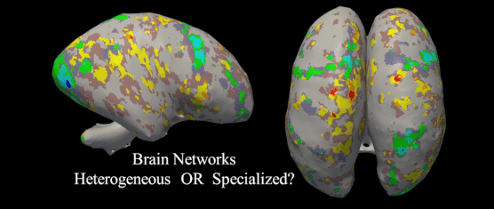
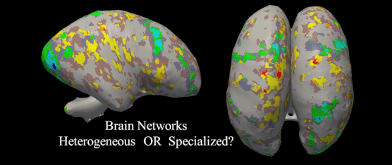
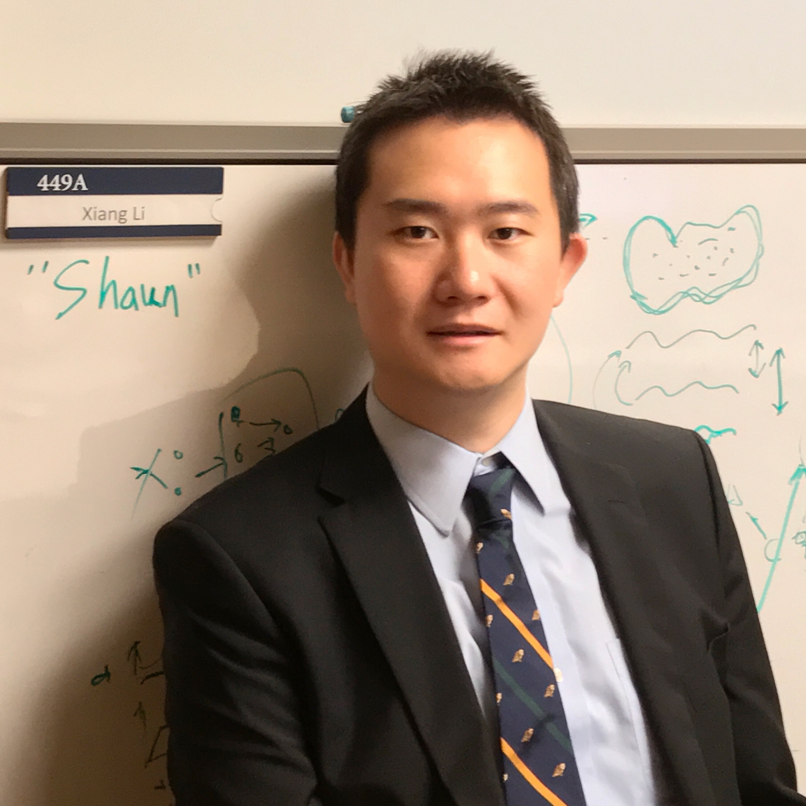

August, 1st, 2017
Our left ventricle quantification paper is accepted by STACOM workshop of MICCAI 2018:
"Multi-Estimator Full Left Ventricle Quantification through Ensemble Learning", arXiv link can be found here.
June, 15th, 2018
Our Neuroimage paper "Spatio-temporal modeling of connectome-scale brain network interactions via time-evolving graphs" is covered by Editorial of Dialogues in Clinical Neuroscience
The article, "New ways of understanding brain neurocircuitry", can be found here.
May, 25th, 2018
Two papers accepted by MICCAI 2018:
"RBC Semantic Segmentation For Sickle Cell Disease Based on Deformable U-Net", arXiv link can be found here.
and
"Modeling 4D fMRI Data via Spatio-Temporal Convolutional Neural Networks (ST-CNN)", which is our collaboration work with Dr. Yu Zhao, a PhD student of Prof. Tianming Liu at the University of Georgia. Its arXiv link can be found here.
May, 8th, 2018
Our presentation in ARRS 2018 is covered by auntminnie, the report can be found here.
March, 30th, 2018
Our project on pneumothorax detection is among the four finalist of the 2018 NVIDIA Global Impact Award, detailed information can be found here.
February, 25th, 2018
Our paper on distributed analytics for fMRI based on rank-1 decomposition and cloud computing, titled "A Distributed Computing Platform for fMRI Big Data Analytics", has been accepted by IEEE Transactions on Big Data, the link can be found here.
February, 21th, 2018
Two reviews on our JACR paper can be found at Radiology Business and auntminnie.
February, 5th, 2018
Our perspective paper on the impact of artificial intelligence on radiology is now online at:Journal of the American College of Radiology, the link can be found here.
It has been selected as the Continuing Medical Education (CME) material of the month, for ACR credentials.
Janurary, 22th, 2018
Tensorflow codes for the 2D and 3D deformable convolution network, associated with our work on blood cell semantic segmentation, is now available at my GitHub page.
December, 22th, 2017
Our work on multi-modal image fusion analysis has been accepted by ISBI 2018:
"Medical Image Segmentation Based on Multi-Modal Convolutional Neural Network: Study on Image Fusion Schemes".
which can also be found on arXiv
November, 20th, 2017
Our work on using deep learning for pneumothorax detection on chest CT images has been accepted by American Roentgen Ray Society 2018 as oral presentation:
"Deep Learning Algorithm for rapid automatic detection of pneumothorax on chest CT"
November, 14th, 2017
Another paper on functional brain dynamics has been accepted by Neuroimage:
In this work we modeled the fMRI signal using dynamic functional networks based on sliding time window approach, then further analyze the patterns of the networks using time-evolving graphs.
November, 1st, 2017
Our work on fusing multi-modal medical images can be found at arXiv
We discussed three different fusion schemes for performing supervised learning on medical image analysis. This is a preliminary study from us on how to utilize images from different modalties together to make more accurate and robust image-based decision.
October, 23th, 2017
Our work on using deformable U-Net for sickle cell segmentation and classification can be found at arXiv
The collaboration work with Mo Zhang at Peking University and Mengjia Xu at Northeastern University develop a fully automatic framework for simutaenous cell segmentation and classification (sementic segmentation) on red blood cells microscopic images.
July, 18th, 2017
Two papers accepted by MLMI 2017:
"Self-paced Convolutional Neural Network for Computer Aided Detection in Medical Imaging Analysis", arXiv link here
and
"Dictionary Learning and Sparse Coding-based Denoising for High-Resolution Task Functional Connectivity MRI Analysis", arXiv link here
May, 29th, 2017
Our work on tensor decomposition on sparse and low rank data can be found at arXiv
The collaboration work with Songting Shi at Peking University offers an integrated framework to perform PARAFAC tensor decomposition on large-scale data with the propertity of both sparse and low-rank.
Feburary, 28th, 2017
Our work on using dicitonary learning for fMRI signal de-noising is accepted by OHBM 2017
"FMRI Signal Denoising by Dictionary Learning for High-Resolution Functional Connectivity Inference"
The MATLAB package for de-noising (both dictionary learning-based and non-local-mean-based) will be publicalby available soon.
January, 8th, 2017
Two papers accepted by ISBI 2017:
"Template-guided Functional Network Identification via Supervised Dictionary Learning"
This work is based on the r1DL model previously proposed in my KDD2016 paper. It has shown fast and accurate performance for identifying target functional networks given a set of pre-defined templates from fMRI signals.
"Exploring Human Brain Activation via Nested Sparse Coding and Functional Operators"
The collaboration work with Shu Zhang, a PhD student of Prof. Tianming Liu, proposed a highly novel framework which characterizes functional networks as the results of "functional operators" inside the brain, which offers a brand new perspective for brain functional decoding.
October, 13th, 2016
Invited talk on the International Workshop on Big Data Neuroimaging Analytics for Brain and Mental Health at the 2016 International Conference on Brain Informatics and Health.
September, 14th, 2016
Joined the Clinical Data Science Center at Harvard Medical School and Massachusetts General Hospital as postdoctoral research fellow, under the mentorship of James H. Thrall, MD and Dr. Quanzheng Li.
June 2nd, 2016
Two papers accepted by MICCAI 2016:
"Modeling Functional Dynamics of Cortical Gyri and Sulci"
This work is our preliminary attempt in investigating the differences of functional dynamics between gyri and sulci areas, which are supposed to work in different roles within the brain functional architecture.
"Discover Mouse Gene Coexpression Landscape Using Dictionary Learning and Sparse Coding"
The work from Yujie Li using sparse coding method on the mouse brain gene data obtained surprisingly cleared-edge map of the mouse brain regions.
May 12th, 2016
Awarded the Outstanding Graduate Dissertation/Thesis! Thanks to Computer Science Department for the recognition and my advisor, Prof. Tianming Liu, for the mentorship!
May 11th, 2016
Paper accepted by ACM SigKDD 2016:
"Scalable Fast Rank-1 Dictionary Learning for fMRI Big Data Analysis"
The collaboration work across our group, Dr. Shannon Quinn and Dr. Jieping Ye features our solutions towards fMRI big data analysis by leveraging the distributed computation power by Python Spark.
March, 17th, 2016
Talk on SIAM-SEAS session "Parallel and distributed computing for biomedical imaging". The presentation slide could be found here.
December 23, 2015
Three papers accepted by ISBI 2016:
"Modeling Functional Network Dynamics Via Multi-Scale Dictionary Learning and Network Continuums" (with Dr. Jieping Ye)
This work marks the development of "network continnum", a novel concept characterizing the continuous/disruptive dynamics of the functional networks. The model reveals ever-changing spatial patterns of the same networks overtime.
"Multiple-Demand System Identification and Characterization Via Sparse Representations of fMRI Data"
This work investigates the well-known multiple-demand system through a network decomposition approach. The work is in sync with our previous Human Brain Mapping paper "Sparse representation of HCP grayordinate data reveals novel functional architecture of cerebral cortex" which focused on MDS on grayordinates (i.e. cortical surface).
"Identifying Group-Wise Consistent Sub-Networks Via Spatial Sparse Representation of Natural Stimulus fMRI Data" (collaboration work with Cheng Lyu)
This work offers a great tool for the brain network analysis from based on its spatial distribution, including sub-network identification and calculating similarities among different networks.
October 14th, 2015
"Sparse representation of HCP grayordinate data reveals novel functional architecture of cerebral cortex", (collaboration work with Xi Jiang) has been accepted by Human Brain Mapping.
July, 20th, 2015
Starting visit at Prof. Jieping Ye's group at University of Michigan.
April, 1st, 2015
Our article, "
Holistic Atlases of Functional Networks and Interactions Reveal Reciprocal Organizational Architecture of Cortical Function", has been selected as the feature story of IEEE Transactions on Biomedical Engineering.

March, 17th, 2015
Guest lecture on UGA CSCI6900: Mining Massive Datasets (at Dr. Shannon Quinn's invitation), the presentation slide could be found here.
February, 13th, 2015
Thanks to Franklin Foundation for providing the travel award to support me for attending ISBI 2015!
February, 5th, 2015
Two papers accepted by ISBI 2015:
"Interactive Exemplar-Based Segmentation Toolkit for Biomedical Image Analysis" (with Dr. Hanchuan Peng)
and
"Characterizing and Differentiating Task-Based and Resting State FMRI Signals Via Two-Stage Dictionary Learning"
February, 3rd, 2015
"Characterizing and Differentiating Task-based and Resting State FMRI Signals via Two-stage Sparse Representations" (collaboration work with Shu Zhang) has been accepted by Brain Imaging and Behavior
September, 29th, 2014
Starting a 3-months visit at Allen Institute of Brain Science, with Zhi Zhou, Brain Long, Hanbo Chen (also from UGA) and Hanchuan Peng.
September, 29th, 2014
"Characterizing and Differentiating Brain State Dynamics via Hidden Markov Models" (collaboration work with Dr. Jinli Ou and Prof. Leo Xie at ZJU) has been accepted by Brain Topography.
May, 13th, 2014
Oral presentation at ISBI 2014, on the topics of Bayesian network-based change point detection and sparse representation of functional network using DICCCOL.
April, 15th, 2013
Nominated for the best student paper award of ISBI 2013

"Interactive Exemplar-Based Segmentation Toolkit for Biomedical Image Analysis" (with Dr. Hanchuan Peng)
and
"Characterizing and Differentiating Task-Based and Resting State FMRI Signals Via Two-Stage Dictionary Learning"

Reach me at:
25 New Chardon St, 449A, Boston, MA, 02114
xiangli.shaun{at}gmail.com
My CV
My Google Scholar page
My ORCID page
 orcid.org/0000-0002-9851-6376
orcid.org/0000-0002-9851-6376